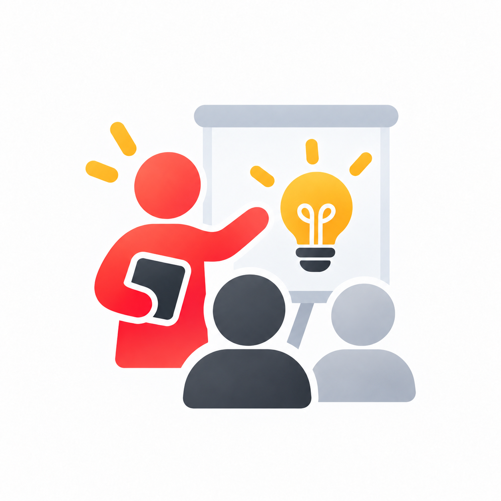

Anna · tema läggs till
Här kommer föreläsningens tema, en kort sammanfattning och en extern länk till materialet.
PresentationKommer senare
Material från externa föreläsare och kunskapsverkstäder. Länkarna kan gå vidare till Canva eller andra presentationsverktyg.

Här kommer föreläsningens tema, en kort sammanfattning och en extern länk till materialet.
Här kommer föreläsningens tema, en kort sammanfattning och en extern länk till materialet.